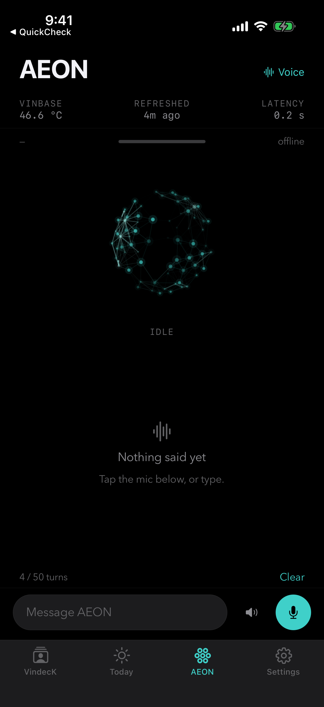

Personal project · self-hosted
Running daily

A personal AI assistant running on my own home server. It takes actions rather than just answering — and because it runs on hardware I own, my data stays on it.
It started in 2024 as a much smaller thing: a voice loop on my laptop — wake word, microphone, speech-to-text, a hosted model, spoken reply. Five versions of that became the case for building the real one on hardware I control.